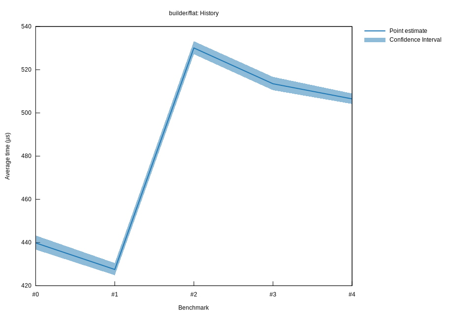

# 42025-10-31T00:31:12-07:00
|
Lower Bound |
Estimate |
Upper Bound |
| Value: |
504.15µs |
506.50µs |
508.99µs |
| Change in Value: |
-2.1240% |
-1.3630% |
-0.6188% |
No change in performance detected.
# 32025-10-30T23:21:49-07:00
|
Lower Bound |
Estimate |
Upper Bound |
| Value: |
510.52µs |
513.50µs |
516.68µs |
| Change in Value: |
-3.8970% |
-3.1276% |
-2.2832% |
No change in performance detected.
# 22025-10-30T19:54:17-07:00
|
Lower Bound |
Estimate |
Upper Bound |
| Value: |
527.18µs |
530.07µs |
533.18µs |
| Change in Value: |
+22.923% |
+23.987% |
+25.064% |
No change in performance detected.
# 12025-10-30T18:20:10-07:00
|
Lower Bound |
Estimate |
Upper Bound |
| Value: |
424.87µs |
427.52µs |
430.51µs |
| Change in Value: |
-3.7819% |
-2.7953% |
-1.8725% |
No change in performance detected.
# 02025-10-30T18:19:42-07:00
|
Lower Bound |
Estimate |
Upper Bound |
| Value: |
436.75µs |
439.82µs |
443.26µs |